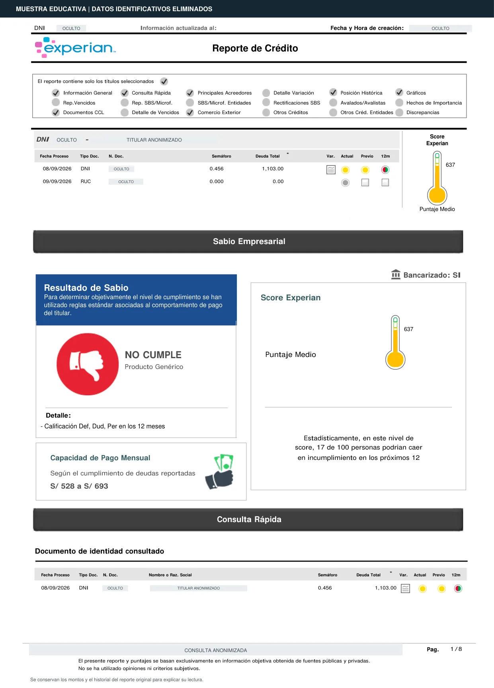

Conoce qué significa tu score, revisa tus deudas y encuentra respuestas para tu situación. Te lo explicamos paso a paso.
Arrastra el círculo para cambiar tu puntaje.
También puedes usar las flechas del teclado al seleccionar el medidor.
Tu puntaje se encuentra en un rango medio. Mantén tus pagos al día y controla tus deudas para fortalecer tu perfil crediticio. El acceso a productos dependerá de la evaluación de cada entidad.
Registro cronológico mes a mes de tu comportamiento de pago y nivel de endeudamiento. Las entidades lo usan para evaluar tu disciplina financiera.
Dinero disponible después de cubrir tus gastos básicos. Ese excedente determina qué cuotas puedes asumir sin afectar tu estabilidad económica.
Monto total acumulado de todos tus préstamos y obligaciones financieras actuales. Las entidades evalúan que sea manejable respecto a tus ingresos.
Ocurre cuando tus deudas se acercan o superan tu capacidad real de pago, o cuando asumes más créditos de los que realmente puedes manejar.
Crédito que estás pagando puntualmente y mantiene una calificación favorable. El objetivo ideal es cumplir siempre dentro de la fecha acordada.
Deuda no pagada por largo tiempo que la entidad considera difícil de cobrar. Aunque deje de actualizarse, la deuda sigue existiendo y afecta futuras solicitudes.
Proceso donde la entidad analiza tus ingresos, historial, score y perfil financiero completo para decidir si aprueba tu préstamo o tarjeta de crédito.
En créditos de consumo, pequeña empresa y microempresa, una mora superior a 120 días corresponde a la categoría “Pérdida”. Puede derivar en gestiones de cobranza y eventuales acciones legales.
Cumplimiento de la cuota o atraso máximo de ocho días calendario.
Señal de alerta temprana. Es importante regularizar cuanto antes.
Atraso significativo y mayor riesgo para la entidad.
Riesgo alto de incumplimiento y acceso a crédito muy limitado.
Categoría de mayor riesgo; puede activar gestiones de cobranza.
Central de riesgo privada que recopila y consolida información financiera de bancos, cajas, financieras, comercios y empresas de servicios como telefonía y retail.
Central de riesgo privada. Empresa global de análisis de datos que opera también en Perú, consolidando información crediticia proveniente del sistema financiero y comercial.
La Superintendencia de Banca, Seguros y AFP publica mensualmente la información consolidada que reportan las entidades financieras supervisadas.
Es una expresión popular, pero imprecisa. Tener un crédito no equivale a ser moroso: lo importante es la calificación y el comportamiento de pago registrado.
La entidad necesita comprobar que puedes pagar la cuota. Si estás en planilla, conserva boletas y contrato; si tienes un negocio, mantén al día tus declaraciones, registros de ventas, compras y movimientos bancarios.
Usa una cuenta de ahorros o cuenta sueldo para recibir ingresos y realizar pagos. Los movimientos consistentes ayudan a documentar tu actividad financiera.
Compara la TCEA, comisiones y condiciones. Elige una cuota pequeña que se ajuste a tu presupuesto; no solicites un crédito solo para “subir el score”.
Puede ser una opción si no tienes historial, pero revisa el monto inmovilizado, las comisiones y el proceso para recuperar la garantía antes de contratar.
Programa recordatorios o débito automático y evita atrasos. La constancia, no la velocidad, es la base de un buen historial.
Una oferta no garantiza la aprobación final ni significa que debas aceptarla. Verifica siempre la TCEA, el monto total y tu capacidad real de pago.
Tu objetivo es evitar cualquier atraso. Programa recordatorios y revisa que el pago se haya procesado correctamente.
Evita el sobregiro y las disposiciones de efectivo, conoce tu fecha de corte y paga el total facturado cuando sea posible. No necesitas usar toda la línea para demostrar actividad.
Antes de ampliar una línea o contratar otro producto, compara la TCEA y confirma que la nueva cuota encaje en tu presupuesto. Más crédito no siempre significa un mejor perfil.
No solicites más créditos de los que puedes pagar. Demasiadas deudas pueden bajar tu score y generar rechazos, aunque pagues puntual.
Que una entidad te ofrezca crédito no significa que debas aceptarlo. Evalúa todas tus cuotas juntas y conserva margen para gastos inesperados.
Contacta a la entidad antes de que el atraso aumente. Solicita por escrito las alternativas disponibles y revisa el costo total antes de refinanciar.
El comportamiento de atraso queda registrado. Solo el tiempo y nuevo historial positivo pueden contrarrestarlo. No hay atajos.
A partir de ahora, paga dentro de la fecha acordada y evita asumir nuevas obligaciones hasta estabilizar tu presupuesto.
Con el tiempo, tu nuevo comportamiento positivo pesa más que el historial negativo pasado. La recuperación es posible, pero requiere paciencia y disciplina.
Un producto bien administrado puede aportar información positiva, pero no lo contrates si la cuota no cabe cómodamente en tu presupuesto.
Después de cancelar tus deudas, revisa el Reporte de Deudas SBS. Si la información vigente es incorrecta, presenta el reclamo ante la entidad que realizó el reporte.
Elige un producto manejable y entiende sus condiciones. Cada pago puntual aporta nueva información positiva a tu historial.
Mantén pagos dentro de la fecha y un uso responsable de tus líneas. Los cambios no siguen un plazo idéntico para todas las personas.
Evita usar toda tu línea y no acumules solicitudes. Evalúa nuevas ofertas solo cuando encajen en tu presupuesto.
Con un perfil estable podrías comparar opciones en otras entidades, sin asumir más obligaciones de las necesarias.
Un historial sólido, ingresos demostrables y capacidad de pago pueden facilitar la evaluación de productos de mayor monto.
Cuando cancelas una deuda, esta deja de aparecer como obligación vigente una vez que la entidad actualiza el reporte. Sin embargo, los periodos anteriores permanecen como parte de tu historial. Pagar es el primer paso. La posibilidad de acceder a un nuevo crédito dependerá de tu perfil completo y de la evaluación de cada entidad.
La entidad evalúa si tus ingresos demostrables permiten asumir la nueva cuota sin comprometer gastos esenciales.
Los pagos puntuales, atrasos y reprogramaciones aportan información sobre cómo administras tus obligaciones.
Se considera el conjunto de cuotas y líneas activas, no únicamente la deuda con una sola entidad.
Las condiciones y criterios de evaluación varían entre tarjetas, préstamos personales, créditos MYPE e hipotecarios.
Administrar responsablemente un producto reportado permite generar nueva información positiva. Aun así, no solicites crédito únicamente para mejorar tu score: primero confirma que la cuota encaje en tu presupuesto y compara el costo total.
Depositas dinero en una cuenta o plazo fijo que queda como garantía, y la entidad evalúa otorgarte una tarjeta o crédito respaldado por ese monto. Antes de contratar, revisa las comisiones, la TCEA, el plazo de inmovilización y las condiciones para liberar la garantía.
Los integrantes se respaldan entre sí y las condiciones varían según la entidad. Lee con especial cuidado qué ocurre si otra persona del grupo no paga y cuánto asumirías tú.
La cuota se descuenta directamente de la remuneración. La elegibilidad, tasa y plazo dependen del convenio, la entidad y tu evaluación crediticia.
Algunas instituciones mantienen convenios de descuento por planilla. Confirma la TCEA, las condiciones de salida del convenio y el impacto de un cambio laboral.
Una tercera persona te respalda. El aval debe tener buen historial y estar bien calificado. La entidad evalúa principalmente la solidez financiera del aval.
La disponibilidad y las condiciones cambian según el proveedor y tu perfil. Antes de aceptar, compara la TCEA, el cronograma y el monto total a pagar. Un préstamo pequeño sigue siendo una obligación financiera.
Después de cancelar una deuda puedes pedir que una entidad evalúe nuevamente tu perfil. La decisión dependerá de tus ingresos, endeudamiento, historial y de sus políticas internas; pagar no genera una aprobación automática.
Salir de Infocorp no te devuelve el crédito. El crédito se recupera demostrando buen comportamiento, mes a mes. La recuperación es posible, pero requiere tiempo, estrategia y constancia.
Explora las ocho hojas de esta muestra Experian. Selecciona una explicación: la flecha te mostrará exactamente dónde mirar.

Una explicación educativa y fácil de entender para que sepas qué aparece en tu reporte, qué significa tu calificación y qué puntos debes revisar.
Escribe tu situación con tus palabras y te mostraremos preguntas relacionadas.
Preguntas que pueden ayudarte
Prueba con “Infocorp”, “ya pagué”, “cuotas” o “score”.
Pagando puntual tus cuotas cada mes. El score mejora con constancia y disciplina. Es un proceso de mediano y largo plazo, no hay atajos.
No existe un tiempo exacto. Depende de tu historial previo, nivel de endeudamiento y comportamiento reciente. Cada perfil es distinto.
El score no determina cuánto te prestan. El score mide qué tan confiable eres. El monto lo define la evaluación crediticia, donde analizan:
Porque la aprobación no depende solo del score. La entidad evalúa:
El score es solo una parte del análisis total.
Un nuevo crédito aumenta tus obligaciones y puede modificar temporalmente la evaluación de riesgo. El efecto exacto depende del modelo de cada central.
El principal motivo suele ser:
Pagando puntual tus créditos vigentes. Cada mes en calificación "Normal" fortalece tu perfil crediticio ante el sistema financiero.
Los atrasos no desaparecen de inmediato. Debes:
Si dejas de pagar:
No. Cuando pagas la deuda se actualiza a "cancelada", pero el historial de atraso no desaparece de inmediato.
Es poco probable un cambio fuerte en tan poco tiempo. El score mejora con historial positivo sostenido.
Te conviertes en responsable solidario. La deuda puede afectar tu score, tu historial y pueden exigirte el pago directamente a ti.
Una deuda no se considera cancelada solo por el paso del tiempo. La prescripción es un asunto legal que depende del caso y no equivale a un pago.
No. Consultar tu propio reporte no afecta tu score. Lo que sí puede afectarlo es hacer muchas solicitudes de crédito en poco tiempo.
No hay un número ideal. Lo importante es que puedas manejarlas sin sobreendeudarte.
La SBS publica información mensual remitida por las entidades. Una deuda cancelada deja de figurar como obligación vigente a partir del mes de cancelación, pero los meses anteriores permanecen en tu historial.
Sí. El sistema evalúa comportamiento de pago, no el tamaño de la deuda.
Depende de los requisitos del propietario. Podrían solicitar garantía, adelanto u otros documentos para evaluar tu capacidad de pago.
Puede ayudarte si evita que caigas en atraso. Lo importante es no dejar de pagar.
No generas atraso, pero hay consecuencias:
Solo si está activo y demuestra ingresos formales. Un RUC sin movimiento tributario no mejora tu perfil.
Las entidades reportan a centrales de riesgo y a la SBS. Comparten información relevante sobre deudas y comportamiento de pago a través de estos registros.
No existe un plazo universal. Pagar puntual ayuda, pero la entidad también evaluará tus ingresos, endeudamiento, estabilidad y políticas internas.
Puede convenir si reduces la tasa y ordenas los pagos. No conviene si solo estás extendiendo el problema sin cambiar tus hábitos.
La evaluación es integral. Analizan: